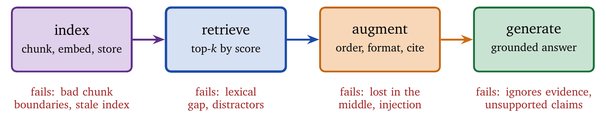
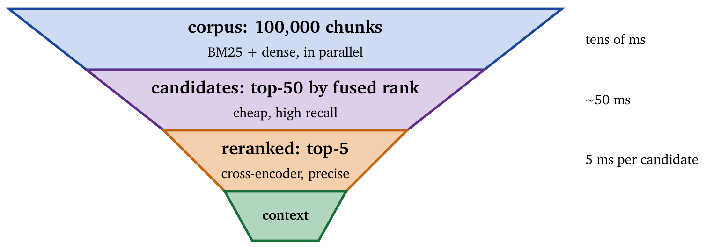
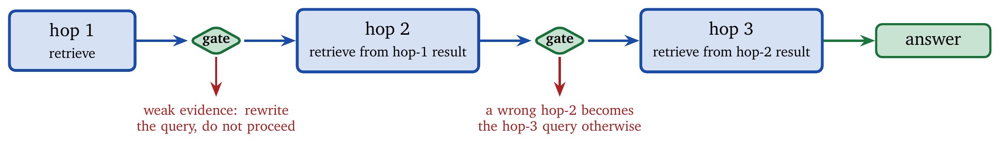

« Memory, State, and Forgetting | Contents | Capability Boundaries and Secure Tool Use »
Part II: Control and CommitmentChapter 11. Retrieval and Evidence Management
Agents that reason from knowledge must retrieve that knowledge. A language model’s parameters encode statistical regularities learned during training, and those parameters are static: they cannot incorporate new facts, reflect organizational knowledge, or respond to events that occurred after training. Retrieval compensates for this by allowing an agent to condition its reasoning on external evidence.
Retrieval is often conflated with search, and the conflation is expensive. A search engine serves a human who will browse, skim, discard, and interpret. Ten links is a good answer because the reader does the filtering. An agent does no filtering worth the name: whatever is retrieved enters its context and competes for attention with everything else there. Ten documents where two were needed is eight documents’ worth of distraction, paid for on every subsequent call.
The success criterion therefore moves. Retrieval works when the final answer improves. Documents that look relevant, score well, and change nothing are a cost with no benefit, and the standard retrieval metrics will report them as a success. Search engines optimize for diversity, freshness, and engagement; retrieval systems must optimize for precision under tight context and latency constraints. Documents that are useful for a human to read may be actively harmful when injected wholesale into a model’s context, where irrelevant text dilutes attention and raises the risk of hallucination.
This chapter treats retrieval as a systems problem: latency and throughput by analogy to memory systems, indexing and chunking as space-for-speed trades, and evidence management as the work of turning documents into usable context. The guiding assumption is that retrieval is a first-class subsystem whose design determines correctness. A vector store bolted onto an agent is a component that can inject adversarial text into the agent’s reasoning (Chapter 12), compound errors across hops, and consume the budget that was meant to fund the answer.
11.1 The Retrieval Problem
Retrieval answers a constrained question: given a query \(q\) and a corpus \(\mathcal{C}\), which pieces of information should be brought into the agent’s working context?
Formally, let \(\mathcal{C} = \{d_1, \ldots, d_n\}\) be a corpus of documents. A retrieval function maps a query to a ranked subset, \[R(q, \mathcal{C}) = \text{top-}k_{d \in \mathcal{C}} \, s(q,d),\] where \(s(q,d)\) is a relevance score. In isolation this is the classical information-retrieval problem. The difference lies in the objective. For agents, retrieval quality is instrumental. Let \(T(q, D)\) be the downstream task performance when query \(q\) is answered using retrieved documents \(D\). The system objective is \[\max_{R} \; \mathbb{E}_{q \sim Q}\left[ T(q, R(q, \mathcal{C})) \right].\] This formulation makes an important fact explicit. Higher retrieval scores are irrelevant unless they improve task outcomes. A document that is relevant by lexical or semantic measures and distracts the model harms performance; a document that scores modestly may be invaluable if it anchors the agent’s reasoning.
11.1.1 Retrieval as Memory Access
Retrieval behaves like memory access in a computer system. The corpus is backing storage; the context window is fast, limited working memory; each retrieval incurs latency and consumes bandwidth by injecting tokens into context.
| Memory-system concept | Retrieval analogue |
|---|---|
| Memory access time | Query latency |
| Memory bandwidth | Documents injected per second |
| Cache hit | Query answered from cached or indexed data |
| Cache miss | Requires expensive search or external access |
| Working set | Documents relevant to the current task |
| Locality of reference | Similar queries over time |
| Prefetching | Anticipatory retrieval |
| Cache invalidation | Corpus updates |
The analogy guides optimization. Indexing reduces access latency as caches reduce memory access time. Query locality enables batching and reuse. Prefetching retrieves documents likely to be needed in subsequent steps. Corpus updates require invalidation to prevent stale evidence.
11.1.2 The RAG Architecture
Retrieval-augmented generation (RAG) [11] integrates retrieval with inference. The canonical pipeline, shown in Figure 11.1, has four stages: index the corpus into retrievable representations, retrieve the \(k\) most relevant documents for a query, augment the model’s context with the retrieved content, and generate an answer grounded in that evidence.

RAG addresses the basic limitation of parametric knowledge. Rather than increasing model size to memorize more facts, it externalizes knowledge and supplies it on demand, which allows access to current information, proprietary data, and domain knowledge without retraining. RAG systems have evolved beyond single-shot retrieval: advanced pipelines add query rewriting, reranking, and iterative refinement; modular RAG decomposes the pipeline into interchangeable components; and agentic RAG [1] introduces autonomous decisions over when and how to retrieve, adapting retrieval depth to task complexity.
11.2 Retrieval Methods
Retrieval methods differ in what signal they treat as evidence of relevance. Sparse methods use lexical overlap. Dense methods use semantic similarity. Hybrid methods combine both, acknowledging that neither signal dominates universally.
11.2.1 Sparse Retrieval: BM25 and Keyword Matching
Sparse retrieval operates in token space. Relevance is inferred from terms shared between query and document, weighted by term importance. The dominant algorithm is BM25, \[\text{BM25}(q, d) = \sum_{t \in q} \text{IDF}(t) \cdot \frac{f(t, d)(k_1 + 1)}{f(t, d) + k_1\left(1 - b + b \cdot \frac{|d|}{\text{avgdl}}\right)},\] where \(f(t,d)\) is the frequency of term \(t\) in document \(d\), \(\text{IDF}(t)\) weights rare terms more heavily, and \(k_1\) and \(b\) are tuning constants. Sparse retrieval excels at exact matching. Rare terms receive high weight through inverse document frequency, which makes sparse methods effective for technical identifiers, error codes, and proper nouns, and inverted indices deliver sub-linear retrieval with predictable latency. The weakness is the lexical gap: queries and documents that share meaning but not vocabulary fail to match, which becomes acute with conversational queries, paraphrase, and cross-domain terminology.
11.2.2 Dense Retrieval: Embeddings and Semantic Search
Dense retrieval embeds queries and documents into a shared vector space and computes relevance as similarity, \[s(q,d) = \frac{E_q(q) \cdot E_d(d)}{\|E_q(q)\| \cdot \|E_d(d)\|}.\] It captures semantic similarity, enabling paraphrase matching and zero-shot generalization, and it performs well when the user’s phrasing diverges from the corpus vocabulary. The costs are nontrivial. Query embedding requires neural inference, dense vectors consume significant storage, approximate nearest-neighbour indices introduce a recall–latency trade-off, and dense retrieval struggles with rare or domain-specific terms unless the embeddings are fine-tuned.
11.2.3 Hybrid Retrieval
Hybrid retrieval combines the two signals, \(s_{\text{hybrid}}(q,d) = \alpha s_{\text{dense}}(q,d) + (1-\alpha)s_{\text{sparse}}(q,d)\), and empirically improves recall and robustness across query types [9]. Reciprocal rank fusion avoids the need to calibrate scores by combining ranked lists directly, \[\text{RRF}(d) = \sum_{r \in R} \frac{1}{k + \text{rank}_r(d)}.\] Hybrid retrieval reflects a general principle: redundancy across orthogonal signals improves reliability.
11.2.4 Late Interaction and Reranking
Initial retrieval emphasizes recall; reranking emphasizes precision. Cross-encoders jointly encode query and document, \(s_{\text{rerank}}(q,d) = \text{CrossEncoder}([q; d])\), achieving high accuracy at high cost. Late-interaction models such as ColBERT [4] approximate this efficiently by computing token-level similarities. The standard cascade, shown in Figure 11.2, retrieves a broad candidate set cheaply and applies the expensive model only to promising candidates.

11.3 Chunking: The Retrieval Unit
Documents must be partitioned into chunks before indexing, and chunking determines the unit over which retrieval operates. Large chunks preserve context and dilute relevance while consuming context capacity. Small chunks enable precise matching and fragment meaning while enlarging the index. The objective is to align chunk boundaries with semantic coherence while respecting embedding and context limits.
Fixed-size chunking is simple and oblivious to structure. Recursive chunking respects natural boundaries such as paragraphs and headings without regard to meaning. Semantic chunking groups related sentences using embeddings, improving coherence at higher indexing cost. Hierarchical chunking preserves parent–child relationships, enabling retrieval of precise units with access to broader context. Systematic comparisons find that the choice interacts strongly with the embedding model and the domain, so no single scheme dominates; recursive chunking with overlap is a reasonable default rather than a settled answer [28, 29].
Chunks often depend on document-level context. Contextual retrieval [2] addresses this by generating a brief description of each chunk’s role within its document and embedding the description alongside the chunk, which improves retrieval when chunks reference entities or assumptions defined elsewhere.
11.4 Index Structures
Efficient retrieval at scale requires indexing. A system that scans the entire corpus for every query has cost linear in corpus size and quickly becomes unusable; index structures trade storage and preprocessing for reduced query latency, and the choice of structure constrains what kinds of retrieval are feasible.
11.4.1 Inverted Indices for Sparse Retrieval
Sparse retrieval relies on inverted indices, which map each term to a posting list of the documents containing it, \(\text{term} \rightarrow [(d_1, f_1), (d_2, f_2), \ldots]\), where \(f_i\) is the term’s frequency in \(d_i\). Query processing intersects the posting lists of the query terms and computes scores such as BM25. Decades of optimization, including skip lists, block-max indices, and early termination, allow sparse retrieval to operate at billion-document scale with predictable latency. From an engineering perspective, inverted indices offer stable query latency independent of any embedding model, index size linear in corpus size and easy to compress, and interpretable retrieval, since a score can be explained by term overlap. The limitation is semantic brittleness: if the relevant documents do not share the query’s terms, the index cannot find them.
11.4.2 Approximate Nearest Neighbour for Dense Retrieval
Dense retrieval requires nearest-neighbour search in a high-dimensional space, and exact search is linear in corpus size, which is infeasible beyond modest scales. Approximate nearest-neighbour (ANN) algorithms sacrifice exactness for latency, aiming at sufficiently high recall rather than perfect recall. Hierarchical Navigable Small World (HNSW) builds a multi-layer graph in which nodes connect to nearby neighbours; queries traverse from coarse to fine layers, giving logarithmic-time search with high empirical recall. Inverted File Index (IVF) partitions the vector space into clusters and searches only the relevant ones; with product quantization (PQ) to compress the vectors, IVF-PQ scales to billion-vector corpora. Vector databases encapsulate these algorithms and add metadata filtering, replication, and online updates; in practice HNSW with metadata filtering achieves sub-100 ms retrieval at 95%+ recall for typical workloads.
| Index type | Build time | Query time | Recall@10 |
|---|---|---|---|
| Flat (exact) | \(O(n)\) | \(O(n)\) | 100% |
| IVF-PQ | \(O(n)\) | \(O(\sqrt{n})\) | 90–95% |
| HNSW | \(O(n \log n)\) | \(O(\log n)\) | 95–99% |
The engineering decision is explicit: choose the lowest-recall configuration that still supports the downstream task accuracy.
11.5 Query Processing
User queries are rarely good retrieval queries. Query processing transforms user intent into forms that maximize retrieval effectiveness while controlling cost.
11.5.1 Query Rewriting
Raw queries may be ambiguous, underspecified, or poorly aligned with corpus terminology. Query rewriting uses a model to reformulate them before retrieval, for clarification (expanding vague references into explicit entities), decomposition (splitting compound questions into simpler sub-queries), and expansion (adding synonyms and related terms). HyDE [10] generates a hypothetical answer and retrieves documents similar to that answer; it is effective when the user’s phrasing diverges from the corpus language, and it increases compute cost and can bias retrieval toward hallucinated concepts if it is not validated. Multi-query retrieval generates several rewritten queries and fuses the results, improving recall at the cost of additional retrieval; RAG-Fusion [13] uses reciprocal rank fusion to combine them without score calibration.
11.5.2 Query Routing
Different queries require different sources and strategies. Query routing classifies intent and dispatches accordingly, deciding which knowledge bases to query, whether to use sparse, dense, or hybrid retrieval, and how deeply to retrieve and rerank. Adaptive RAG [21] shows that lightweight routing improves efficiency by avoiding over-retrieval on simple queries while enabling deeper retrieval on complex ones.
11.6 Advanced RAG Architectures
Basic retrieve-then-generate pipelines fail in predictable ways: unnecessary retrieval, irrelevant context, and brittle grounding. Advanced architectures address these failures explicitly.
Self-RAG [19] trains the model to reason about retrieval itself. The model emits control tokens indicating whether retrieval is needed, whether the retrieved documents are relevant, and whether the generated content is supported by evidence. This reduces unnecessary retrieval and improves faithfulness, and it treats retrieval as a decision problem rather than a fixed preprocessing step.
Corrective RAG [5] detects retrieval failures and retries with modified strategies. If the retrieved documents are irrelevant, the system rewrites the query, searches alternative sources, or decomposes the question. Corrective loops ensure that generation proceeds only when evidence quality meets a threshold, which shifts complexity from generation to retrieval, where errors are cheaper to detect.
Multi-hop retrieval chains information across documents by decomposing a query into sequential retrieval steps, each conditioned on the previous results. RAPTOR [15] builds hierarchical summaries that support retrieval at several levels of abstraction. Graph RAG [8] constructs entity–relationship graphs that support relational queries spanning documents.
Agentic RAG [1] embeds autonomous agents into the retrieval pipeline. Agents plan retrieval strategies, select tools, evaluate intermediate evidence, and adapt. This aligns retrieval with the control loop of earlier chapters: planning decides what to retrieve, tool use executes it, reflection validates the evidence, and iteration refines.
11.6.1 Is Agentic RAG Worth It?
The question deserves an answer with numbers attached, because agentic retrieval costs several times what a single-shot pipeline costs and the literature reporting it tends to be written by its authors. Controlled comparison across approaches finds the gains real and conditional: the adaptive machinery pays on queries that genuinely require multiple hops or query reformulation, and loses on the large fraction of traffic that a single well-formed retrieval answers [25]. This is the cascade argument of Chapter 7 in a new setting: route by difficulty, and reserve the expensive path for queries that need it. Cost-aware query routing makes that explicit for retrieval, treating retrieval depth as the routed variable and trading grounding against token cost and latency per query rather than globally [27]. A fixed top-\(k\) is a decision made once, for all queries, by someone who had not seen them.
11.6.2 Error Compounding Across Hops
Multi-hop retrieval has a failure mode that single-shot retrieval lacks: a mistake at hop one becomes the query for hop two. The CHARM framework characterizes this cascading hallucination in agentic RAG and proposes detection that operates across the hop chain rather than on any single output [24]. Figure 11.3 shows the mechanism and the remedy. The practical implication is a gate (Chapter 9) at each hop boundary rather than only at the end. Evidence quality should be checked before it becomes the basis for the next retrieval, because by the final answer the error has been laundered through three steps of plausible reasoning and no longer looks like a retrieval failure.

11.6.3 Retrieval as an Attack Surface
Retrieved content is untrusted input that the agent treats as evidence, which makes the corpus an injection vector. Black-box attacks that hijack the reasoning of agentic RAG systems by planting content designed to be retrieved have been demonstrated [26]. Two defenses belong in the design rather than in an incident plan. Retrieved text should be structurally marked as data and never as instruction, and the agent’s capabilities should be scoped so that a successful injection cannot reach anything expensive (Chapter 12). Chapter 1 made the general point; retrieval is where it is most often forgotten, because the corpus feels internal even when anyone with a wiki account can write to it.
11.7 Evidence Management
Retrieved documents are raw inputs. Evidence management turns them into a form that reliably supports reasoning; without it, retrieval increases the risk of hallucination by flooding the model with loosely related text. It answers three questions: which retrieved material to include, how to represent it, and how to order and attribute it.
11.7.1 Evidence Aggregation
Retrieved documents overlap, contradict, or partly address the query, and an aggregation strategy decides how to combine them. Concatenation appends everything; it preserves information and risks exceeding the context and diluting relevance, so it is viable only when retrieval precision is high and the window is large. Summarization compresses documents before inclusion; it reduces context usage and adds a modeling step that can distort facts or drop details. Extraction selects only the relevant passages; it requires fine-grained relevance modeling and offers the best balance of precision and context efficiency for factual tasks. Fusion synthesizes evidence into a unified representation; REPLUG [22] formalizes this by marginalizing over retrieved documents during generation rather than committing to one context. Question answering benefits from extraction, synthesis tasks from fusion, and exploratory tasks may tolerate concatenation.
11.7.2 Evidence Validation
Retrieval does not guarantee correctness, and validation filters evidence before it influences generation. The dimensions are relevance (does the document address the query?), recency (is it current?), authority (is the source credible?), and consistency (do the sources agree?). Validation can be implemented with lightweight classifiers, model-based graders, or heuristic rules. SEER [18] performs self-aligned extraction to enforce faithfulness; TrustRAG [20] detects poisoned data through clustering and self-assessment. Over-validation reduces recall and frustrates users; under-validation raises the hallucination risk; the threshold depends on domain risk.
11.7.3 Context Ordering
Models do not attend uniformly across a long context. The lost-in-the-middle phenomenon [12] shows attention concentrating at the beginning and end of the prompt. Effective ordering places the most relevant evidence first or last, interleaves documents rather than grouping by source, adds explicit separators and metadata headers, and keeps the context well below the window’s maximum. Ordering is a low-cost optimization with a disproportionate effect on answer quality.
11.7.4 Citation and Attribution
Grounded generation requires explicit attribution. Citations enable verification, build trust, and simplify debugging. Common approaches include inline citation markers with post-processing, structured outputs pairing claims with sources, and secondary verification passes that check support. A citation failure usually indicates an upstream retrieval or validation error and should be logged as a system fault.
11.8 Retrieval Metrics
Retrieval must be evaluated both on its own and end to end. Retrieval quality metrics, Recall@k, Precision@k, MRR, and nDCG, measure ranking quality; high recall is necessary and insufficient, since precision determines how much noise enters the context. End-to-end metrics measure what matters: answer correctness, faithfulness to the evidence, and attribution accuracy. RAGAS [14] evaluates these jointly and exposes cases where good retrieval still yields poor answers. Efficiency metrics, latency, throughput, and cost, constrain deployment: dense retrieval is considerably more expensive than sparse, and reranking adds latency in exchange for precision.
11.9 Worked Example: An Enterprise Knowledge Base
Consider retrieval over an enterprise knowledge base of 100,000 documents: policies, procedures, technical documentation.
Indexing. Documents are chunked by recursive splitting into 512-token chunks with 50-token overlap. Contextual descriptions are generated for chunks of long documents. Dense embeddings (E5-large, 1024 dimensions) and a sparse BM25 index are built, and both are stored in a vector database with metadata (document type, date, department).
Retrieval pipeline. Queries are rewritten to expand acronyms and clarify ambiguous terms. Hybrid retrieval with \(\alpha = 0.7\) dense and \(0.3\) sparse returns the top 50. Metadata filtering restricts results to documents the user may access, enforcing the access-control list at retrieval time. A cross-encoder reranks the 50 and returns the top 5. Evidence validation grades relevance and falls back to web search if the internal sources are insufficient.
Generation. The context contains the top 5 documents, most relevant first. The prompt includes document metadata and instructs the model to cite sources. The response carries inline citations, and post-processing validates them and adds source links.
Evaluation. Retrieval targets Recall@5 of 85% or better on a held-out query set. Generation targets a faithfulness score of 90% or better on sampled responses. Latency targets a 95th percentile under 500 ms including reranking. User feedback is collected and tracked over time.
11.10 Summary
Retrieval gives agents access to knowledge beyond their parameters. The retrieval problem maps to memory access in a computer system, with analogous optimizations, and its objective is downstream task performance rather than any intrinsic relevance score.
Three retrieval methods dominate: sparse, dense, and hybrid. Hybrid retrieval followed by reranking achieves the best precision, with cheap retrieval casting a wide net and an expensive reranker narrowing it. Chunking sets the retrieval unit and trades context preservation against precision; recursive chunking with overlap and contextual descriptions is a practical default. Index structures make retrieval feasible at scale: inverted indices for sparse retrieval, approximate nearest-neighbour indices for dense. Query processing transforms user intent into effective queries.
Advanced architectures address specific failures: Self-RAG models the retrieval decision, Corrective RAG detects and repairs failures, multi-hop retrieval handles queries that span documents, and agentic RAG adapts strategy dynamically, at a cost that pays only on the queries that need it. Errors compound across hops and require a gate at each boundary. Evidence management refines retrieved documents into usable context through aggregation, validation, ordering, and citation.
Retrieval is a first-class component. Every design decision, chunking, embedding model, reranking threshold, context ordering, affects the agent’s output, and it should be evaluated by that output.
11.11 Common Misunderstandings
More retrieval is better. Retrieving too many documents dilutes the context with noise, and the model may ignore relevant content buried in irrelevant text. Optimize precision as well as recall.
Dense retrieval supersedes sparse. Hybrid consistently outperforms either alone. Sparse retrieval catches exact matches that dense retrieval misses.
Chunking is a detail. Poor chunking is the most common cause of retrieval failure. A chunk that mixes topics matches many queries weakly rather than few queries strongly.
Reranking is optional. Initial retrieval optimizes efficiency; reranking optimizes quality. A cross-encoder over the top 100 adds 50–100 ms and substantially improves precision.
Embeddings are universal. General-purpose embeddings may represent domain terminology poorly. Fine-tune on domain data or use a domain-specific model.
The index can be built once. Knowledge bases change, and a stale index returns outdated information. Implement incremental indexing and cache invalidation.
A vector database solves retrieval. The database is infrastructure. Retrieval quality depends on chunking, embeddings, reranking, and query processing.
Empty retrieval can be ignored. When nothing relevant is returned, the model may hallucinate or refuse. Implement fallbacks: query rewriting, alternative sources, graceful degradation.
Exercises
Chunking analysis. A 10,000-token document contains 20 distinct topics. Compare (a) fixed 500-token chunks and (b) semantic chunking that produces variable-size, topic-aligned chunks. For a query targeting a single topic, analyze the expected recall and precision under each strategy. What assumptions must hold for semantic chunking to win?
Hybrid retrieval optimization. BM25 achieves Recall@10 of 0.72, dense retrieval 0.78, and their reciprocal-rank fusion 0.85. Explain why the hybrid exceeds both. Design an experiment to determine the optimal weight \(\alpha\) for a linear combination, and state what data it requires.
Reranking cost–benefit. A retrieval system serves 1,000 queries per second. Initial retrieval takes 50 ms and cross-encoder reranking takes 5 ms per document. With top-100 retrieval reranked to top-10, what is the total latency? How does parallelization help? At what throughput does reranking become infeasible?
Multi-hop decomposition. The query “What was the revenue growth of the company that acquired the startup founded by the person who invented the algorithm used in our recommendation system?” requires multi-hop retrieval. Decompose it into a retrieval chain, identify the dependencies between steps, and describe how Corrective RAG would handle a failure at step 2.
Evidence validation design. Design a validation pipeline for a medical question-answering system. Specify (a) relevance criteria, (b) recency requirements, (c) authority assessment for sources, (d) consistency checking across documents, and (e) fallback behavior when validation fails. What are the risks of over-validation and of under-validation?
Bibliographic Notes
Retrieval-augmented generation was introduced by Lewis et al. [11], demonstrating that retrieval can substitute for model scale. RETRO [17] showed that a 7.5B-parameter model with retrieval matches a 175B-parameter model without it.
Dense retrieval was advanced by DPR [6] for open-domain question answering. Contrastive learning for embeddings is surveyed in [23]; E5 [7] and BGE provide strong general-purpose embeddings. Hybrid retrieval is analyzed in [9]; reciprocal rank fusion was introduced by Cormack et al.; late-interaction models including ColBERT [4] enable efficient reranking.
Chunking strategies are compared systematically in [28] and [29]. Contextual retrieval was introduced by Anthropic [2].
Self-RAG [19] models retrieval decisions with reflection tokens. Corrective RAG [5] adds self-correction loops. RAPTOR [15] enables multi-level retrieval through recursive summarization. Graph RAG [8] constructs knowledge graphs for relational queries. Agentic RAG is surveyed in [1], which categorizes architectures into single-agent, multi-agent, hierarchical, and corrective variants; the reasoning-RAG survey [16] connects RAG to dual-process theories of cognition.
RAG evaluation frameworks include RAGAS [14] and the unified evaluation process of Auepora [3].
Bibliography
A. Singh, A. Ehtesham, et al. Agentic Retrieval-Augmented Generation: A Survey on Agentic RAG. arXiv preprint arXiv:2501.09136, 2025.
Anthropic. Introducing Contextual Retrieval. Technical Report, 2024.
H. Yu et al. Evaluation of Retrieval-Augmented Generation: A Survey. arXiv preprint arXiv:2405.07437, 2024.
O. Khattab and M. Zaharia. ColBERT: Efficient and Effective Passage Search via Contextualized Late Interaction over BERT. In SIGIR, 2020.
S. Yan et al. Corrective Retrieval Augmented Generation. arXiv preprint arXiv:2401.15884, 2024.
V. Karpukhin, B. Oguz, S. Min, P. Lewis, L. Wu, S. Edunov, D. Chen, and W. Yih. Dense Passage Retrieval for Open-Domain Question Answering. In EMNLP, 2020.
L. Wang et al. Text Embeddings by Weakly-Supervised Contrastive Pre-training. arXiv preprint arXiv:2212.03533, 2022.
Microsoft. GraphRAG: Unlocking LLM Discovery on Narrative Private Data. Technical Report, 2024.
C. Sharma. Retrieval-Augmented Generation: A Comprehensive Survey. arXiv preprint arXiv:2506.00054, 2025.
L. Gao et al. Precise Zero-Shot Dense Retrieval without Relevance Labels. In ACL, 2023.
P. Lewis, E. Perez, A. Piktus, F. Petroni, V. Karpukhin, N. Goyal, H. Küttler, M. Lewis, W. Yih, T. Rocktäschel, S. Riedel, and D. Kiela. Retrieval-Augmented Generation for Knowledge-Intensive NLP Tasks. In NeurIPS, 2020.
N. F. Liu et al. Lost in the Middle: How Language Models Use Long Contexts. TACL, 2024.
Z. Rackauckas. RAG-Fusion: A New Take on Retrieval-Augmented Generation. arXiv:2402.03367, 2024.
RAGAS. Evaluation Framework for RAG Pipelines. Documentation, 2024.
P. Sarthi et al. RAPTOR: Recursive Abstractive Processing for Tree-Organized Retrieval. In ICLR, 2024.
Reasoning RAG Survey. Reasoning RAG via System 1 or System 2: A Survey. arXiv preprint arXiv:2506.10408, 2025.
S. Borgeaud et al. Improving Language Models by Retrieving from Trillions of Tokens. In ICML, 2022.
X. Zhao et al. SEER: Self-Aligned Evidence Extraction for Retrieval-Augmented Generation. arXiv:2410.11315, 2024.
A. Asai et al. Self-RAG: Learning to Retrieve, Generate, and Critique through Self-Reflection. In ICLR, 2024.
H. Zhou et al. TrustRAG: Enhancing Robustness and Trustworthiness in Retrieval-Augmented Generation. arXiv:2501.00879, 2025.
Soyeong Jeong, Jinheon Baek, Sukmin Cho, Sung Ju Hwang, and Jong C. Park. “Adaptive-RAG: Learning to Adapt Retrieval-Augmented Large Language Models through Question Complexity.” arXiv:2403.14403, 2024. NAACL 2024.
Weijia Shi, Sewon Min, Michihiro Yasunaga, Minjoon Seo, Rich James, Mike Lewis, Luke Zettlemoyer, and Wen-tau Yih. “REPLUG: Retrieval-Augmented Black-Box Language Models.” arXiv:2301.12652, 2023. NAACL 2024.
Hongliu Cao. “Recent Advances in Text Embedding: A Comprehensive Review of Top-Performing Methods on the MTEB Benchmark.” arXiv:2406.01607, 2024.
Saroj Mishra. “Cascading Hallucination in Agentic RAG: The CHARM Framework for Detection and Mitigation.” arXiv:2606.04435, 2026.
Pietro Ferrazzi et al. “Is Agentic RAG worth it? An experimental comparison of RAG approaches.” arXiv:2601.07711, 2026. ACL 2026.
Chanwoo Choi et al. “KidnapRAG: A Black-Box Attack for Hijacking Reasoning in Agentic Retrieval-Augmented Generation Systems.” arXiv:2607.00422, 2026. EMNLP 2026.
Sanjay Mishra. “Cost-Aware Query Routing in RAG: Empirical Analysis of Retrieval Depth Tradeoffs.” arXiv:2606.02581, 2026.
Mahmoud Amiri and Thomas Bocklitz. “Chunk Twice, Embed Once: A Systematic Study of Segmentation and Representation Trade-offs in Retrieval-Augmented Generation.” arXiv:2506.17277, 2025.
Valentin J. J. Kreileder, Johannes Reisinger, and Andreas Fischer. “Evaluating Chunking Strategies for Retrieval-Augmented Generation on Academic Texts.” arXiv:2607.01852, 2026.
© 2026 Madhava Gaikwad. Also available as a PDF.
Visitors: